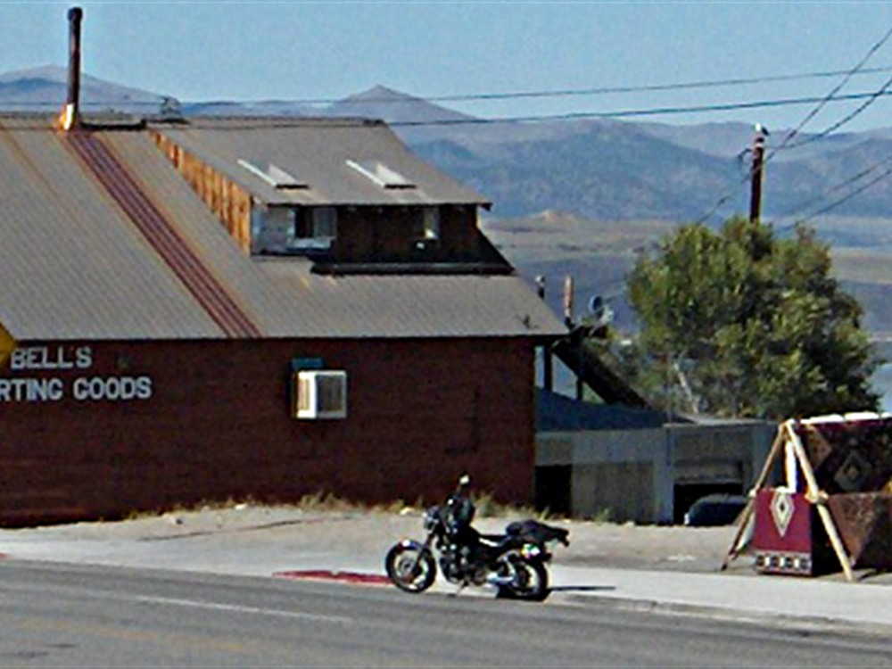
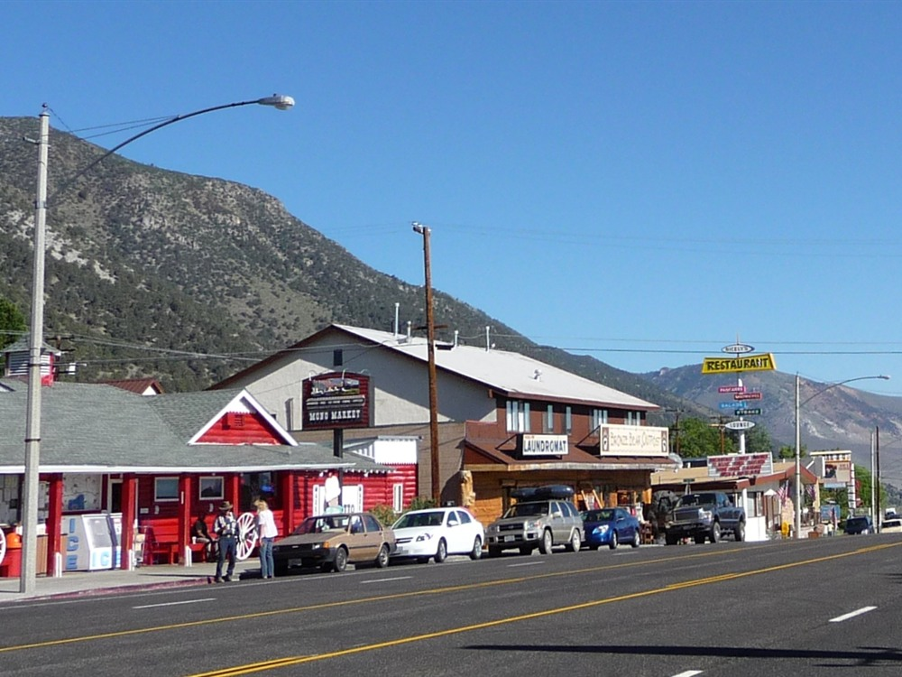
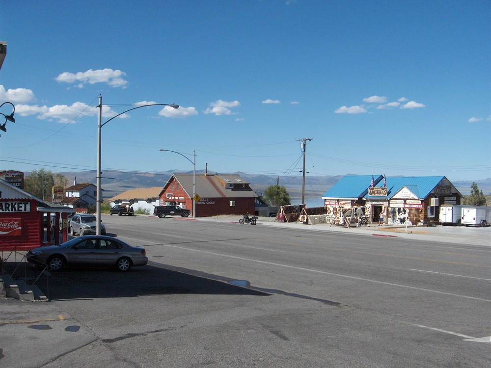
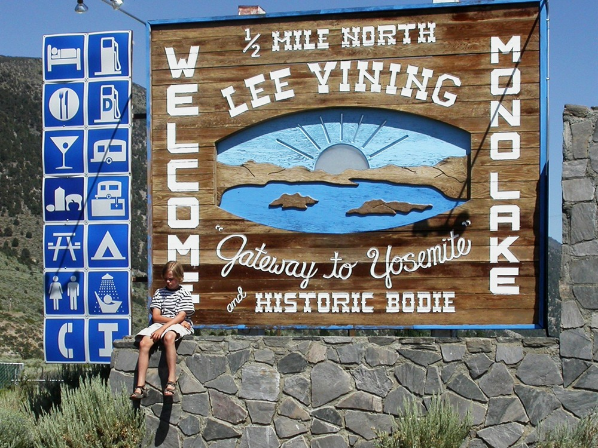

Small Eastern Sierra town offering access to Mono Lake, Yosemite National Park, and a variety of outdoor recreation, visitor services, and scenic byways.
General Information
Town businesses generally open 7am–9pm during peak season
Fees apply for camping, guided tours, and Yosemite entry
How to Get There
From Mammoth Lakes (27 mi): Drive north on US-395 for approximately 27 miles; Lee Vining is located at the junction with CA-120 near Mono Lake.
Overview
Lee Vining is a charming high-desert town perched on the edge of Mono Lake and nestled at the base of the Sierra Nevada near the eastern entrance to Yosemite National Park. Known as the gateway to both Mono Lake and Tioga Pass, Lee Vining serves as a hub for travelers exploring the Mono Basin Scenic Area. The town features two visitor centers, local eateries, rustic lodges, and access to hiking, birdwatching, and photography hotspots. The Mono Basin Scenic Area Visitor Center offers exhibits on the region’s geology, ecology, and cultural history, while nearby South Tufa showcases the lake’s iconic limestone formations.
With its proximity to Yosemite, the Inyo National Forest, and the volcanic landscapes of the Eastern Sierra, Lee Vining is a perfect base camp for outdoor adventures. In spring and summer, wildflowers and migrating birds fill the basin, while fall brings vibrant foliage to the surrounding canyons. Whether you're paddling on Mono Lake, hiking to alpine lakes, or simply enjoying a slice of pie at a roadside café, Lee Vining offers a peaceful and scenic retreat steeped in natural wonder.
Things to Do
Experience a Gateway to Mono Lake and Yosemite's Eastern Sierra
Lee Vining is a small mountain community located on the eastern shore of Mono Lake and serves as one of the primary gateways to Yosemite National Park via Tioga Pass. Surrounded by volcanic landscapes, alpine peaks, and unique desert environments, the town offers visitors exceptional opportunities for sightseeing, outdoor recreation, wildlife viewing, and photography.
Visit Mono Lake
Mono Lake is one of California's most remarkable natural features and is famous for its distinctive limestone tufa towers that rise from the water. Visitors can explore the shoreline, learn about the lake's ecology, photograph unusual geological formations, and observe one of North America's oldest lakes.
Explore the Mono Basin Scenic Area Visitor Center
The Mono Basin National Forest Scenic Area Visitor Center provides exhibits, interpretive displays, educational programs, and panoramic views of Mono Lake and the surrounding Sierra Nevada. Visitors can learn about the region's geology, wildlife, and conservation history before exploring the area's attractions.
Drive Tioga Pass Road
When open seasonally, Tioga Pass Road provides one of the most spectacular scenic drives in California. The route climbs into Yosemite National Park and offers access to alpine lakes, meadows, granite peaks, hiking trails, and breathtaking Sierra Nevada scenery.
Discover South Tufa and Wildlife Viewing Areas
South Tufa is the most popular location for viewing Mono Lake's famous tufa formations. The area also supports abundant birdlife, including migratory birds, gulls, grebes, and shorebirds, making it one of California's premier wildlife viewing destinations.
Explore Nearby Ghost Towns and Volcanic Landscapes
The Lee Vining area is surrounded by volcanic features, lava formations, and historic mining communities such as Bodie State Historic Park. Visitors can explore unique geological landscapes while learning about the region's rich mining and settlement history.
Top Trails
South Tufa Trail
Length: Approximately 1 mile loop
Elevation Gain: Minimal
Difficulty: Easy
This accessible loop trail leads visitors through Mono Lake's most famous tufa formations and provides excellent opportunities for photography, wildlife observation, and learning about the lake's unusual geology.
Mono Lake Boardwalk Trail
Length: Approximately 0.5 miles round trip
Elevation Gain: Minimal
Difficulty: Easy
Located near the visitor center, this short boardwalk trail offers interpretive exhibits and sweeping views of Mono Lake, the Sierra Nevada, and surrounding volcanic terrain.
Lundy Canyon Trail
Length: Approximately 4 miles round trip
Elevation Gain: Moderate
Difficulty: Moderate
A popular nearby hike featuring waterfalls, aspen groves, wildflowers, and mountain scenery. The trail provides a beautiful contrast to the desert landscapes around Mono Lake.
Panum Crater Trail
Length: Approximately 1 mile loop
Elevation Gain: Moderate
Difficulty: Easy to Moderate
This trail explores one of the youngest volcanic features in the Mono Basin. Visitors can hike to the rim of the crater and enjoy panoramic views of Mono Lake, surrounding mountains, and volcanic landforms.
Sources: Mono Basin National Forest Scenic Area visitor information, including details on Mono Lake, South Tufa, Panum Crater, Tioga Pass access, wildlife viewing, and recreational opportunities. https://www.fs.usda.gov/recarea/inyo/recarea/?recid=20636 https://www.monolake.org
This article uses material from the Wikipedia articles and official tourism pages for the Lee Vining, which are released under the https://creativecommons.org/licenses/by-sa/3.0/.






